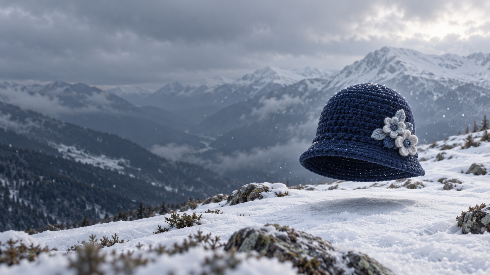
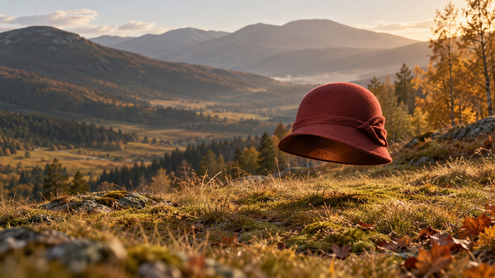
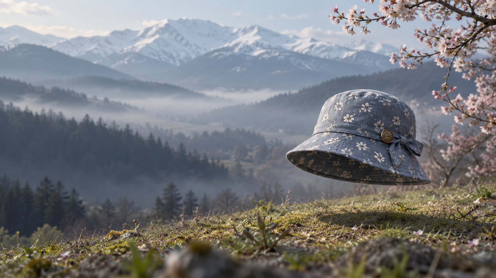

Шляпная погода

01 / Зима
Пойдём по снегу
Тёмно-синяя вязаная шапка-клош с молочными цветами.

02 / Осень
Пойдём длинной дорогой
Фетровый клош кирпично-красного цвета.
03 / Лето
Пойдём к озеру
Широкополая шляпа из рафии с льняной лентой.

04 / Весна
Пойдём раньше обычного
Серо-голубая хлопковая панама с мелкими цветами.